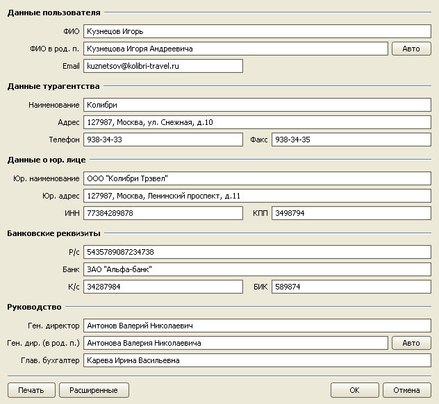
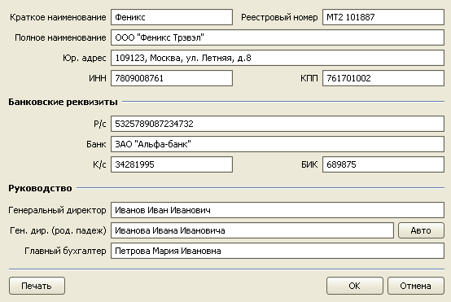
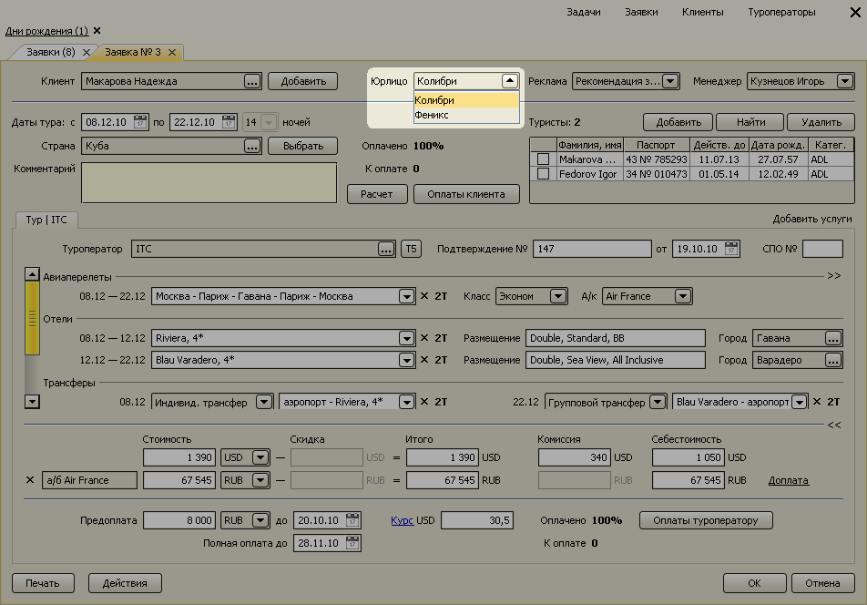

Реквизиты турагентства
Для однопользовательской версии
В справочнике реквизитов хранится информация о турагентстве, используемая при формировании договоров с клиентом и др. печатных форм. Данный справочник содержит следующую информацию о турагентстве:
- фамилия, имя, отчество менеджера турфирмы,
- наименование и контактная информация агентства,
- данные о юр. лице,
- банковские реквизиты,
- данные о руководстве фирмы.

Для многопользовательской версии
В многопользовательской версии программы есть возможность оформлять договоры на различные юридические лица. Чтобы добавить еще одно юрлицо нажмите правой кнопкой мыши на таблице "Юридические лица" и в появившемся контекстном меню выберите пункт "Добавить".

В открывшемся окне заполните реквизиты юрлица.

После добавления нового юридического лица в заявке появится возможность выбирать юрлицо, на которое будет оформлен договор.

Остались вопросы? Напишите нам на e-mail